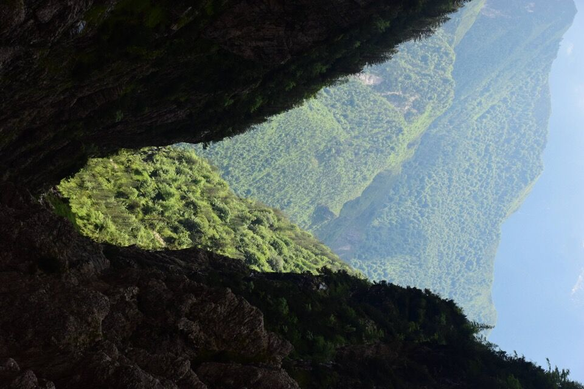
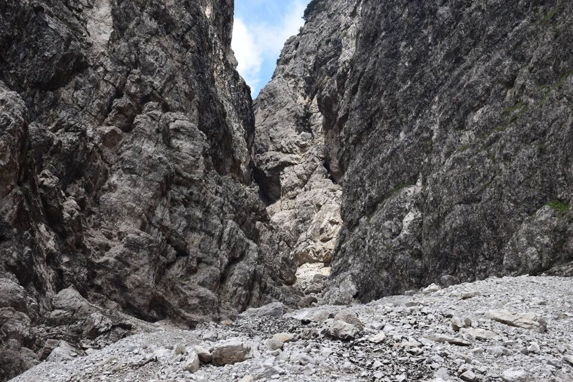
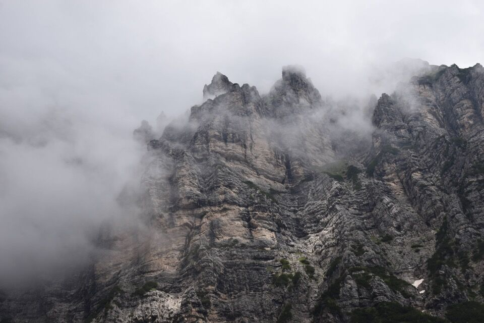

La monografia sul nodo della Vacalizza, relativamente al Forzèl Borsàt, recita: «Di relativamente agevole accesso da NO (da Val Cimoliana, per il Ciol Tramontin), impervio e pauroso da SE (da Val Settimana, per il Ciol de Méne Borsàt) ...», insomma non proprio invitante! Non è (più) vero quello che scrive il Berti: a q1650 circa c'è una enorme strozzatura nel Ciol (parlano di una paretina bagnata di IV), quindi l'accesso diretto alla forcella non è possibile.
La suddetta monografia ignora però l'esistenza del mitico Bus de Foradoria, percorso di camosci complesso e labirintico, che evita la parte finale del Ciol de Méne Borsàt; di qui è sceso più di 60 anni fa il padre cacciatore di Pietro Grava. Il percorso è stato riscoperto e percorso di recente (9 volte su e giù!) da Luca Basso, l'unica persona che poteva avventurarsi in un ambiente del genere. Luca mi dice che gli ci sono volute tre volte per venirne fuori: dalle cinque di mattina alle nove di sera solo per risolvere il tratto chiave!
C'ho voluto provare anche io, ma ero conoscio che riuscirci in una volta sola fosse troppo ottimistico: dimmi te se mi tocca sentire quelli che mi dicono potevi salire dalla normale che almeno in cima ci arrivavi. Giusto: andate per la normale.
Come per il Ciol de Giaéda, anche qui s'immettono vari cengioni spioventi, tutti con evidenti tracce di bestie, che portano verso il Bosc da Val e il Bosc de Ciócio (collegamenti col Ciol de Susàna). Solo sul lato sx orografico si vedono: la cengia da noi seguita per entrare nel Ciol de Méne Borsàt, la Cengia de Danùt (credo) che porta ai Stai de Nuci, una cengia di bestie mediana (percorsa da cacciatori da quanto mi ha detto Luca), la "gran cengia Sud del Turlón", percorsa da Luca (collegamento Bosc da Val - Forzèl Borsàt), e la cengia di Bepi Nart ancora più alta.
Comunque qualunque deviazione diventa impensabile al ritorno!
Lasciamo una macchina a ponte Confòz: arditissimo il Turlón.
Il primo brivido è attraversare sulla trave dei Stai de Sora!
Il sentiero d'accesso al ciol de Méne Borsàt è stato completamente cancellato da Vaia: è un disastro e una faticaccia già dai primi metri.

Di là il costone boscoso, su cui si sviluppa il Bosc de Ciócio, che divide il ciol de Méne Borsàt dal ciol de Susàna.
Visione stupenda!
Sì però... e da qua come si scende?
Un modo lo si trova.
C'è voluta qualche ora solo per mettere piede nel ciol!

Più in basso, in sx orografica, un cengione boscoso che suppongo essere la thengia de Nanut.
Il ciol continua incassato, peccato perché non mancherebbe molto al forzèl...
Bella cengia di bestie che porta al Bosc da Val; Luca Basso mi ha riferito che un cacciatore gli ha riferito di averla percorsa.
Inizia la parte difficile.
Sempre sorvegliati dall'immensa mole del Turlón.
Il selvaggio Bosc da Val.
Bella cengia, ma siamo assolutamente fuori strada. A girare in lungo e in largo per questi posti, complice anche un passaggio assolutamente insospettabile, abbiamo perso ore.
Passaggi insperati.
Dopo 7 ore (!) arriviamo all'inizio del Bus de Foradoria... ancora lontanissimi dalla mèta. Non tutti sono d'accordo ma li convinco a tornare indietro, continuare sarebbe troppo rischioso: non si può pensare di tornare indietro dopo 10-11 ore.
Passaggi delicati ed esposti non mancano...
...come anche passaggi molto ripidi dove non abbiamo disdegnato la corda.
Che rottura ripercorrere tutto il ciol! Manca un'eternità!
La cengia d'accesso.
Stalla Grava Susàna, che all'andata maldestramente non avevamo visto.
Ormai quasi a sera siamo giù... qui le Pale de Tolmen.
Impressionanti i contrafforti dei Viéres visti dal fondovalle: il canale che si intuisce in centro foto è il ciol de Susàna, con il Col de la Question in dx orografica.